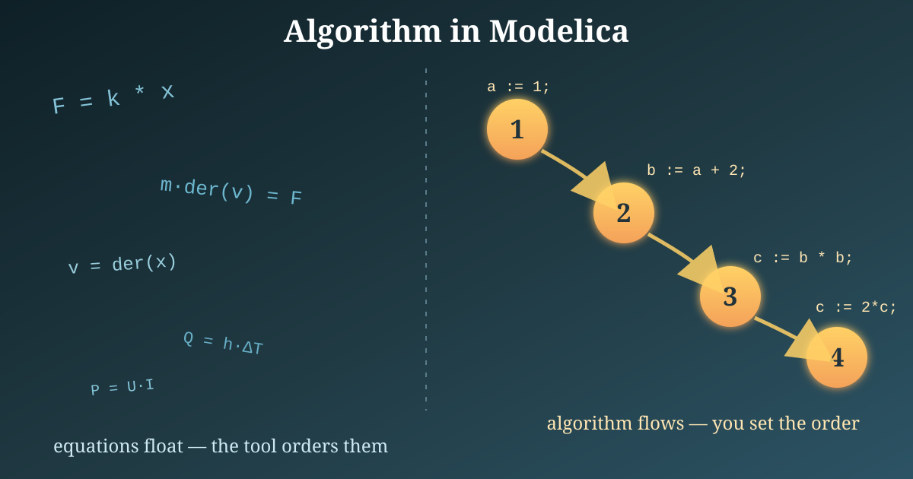
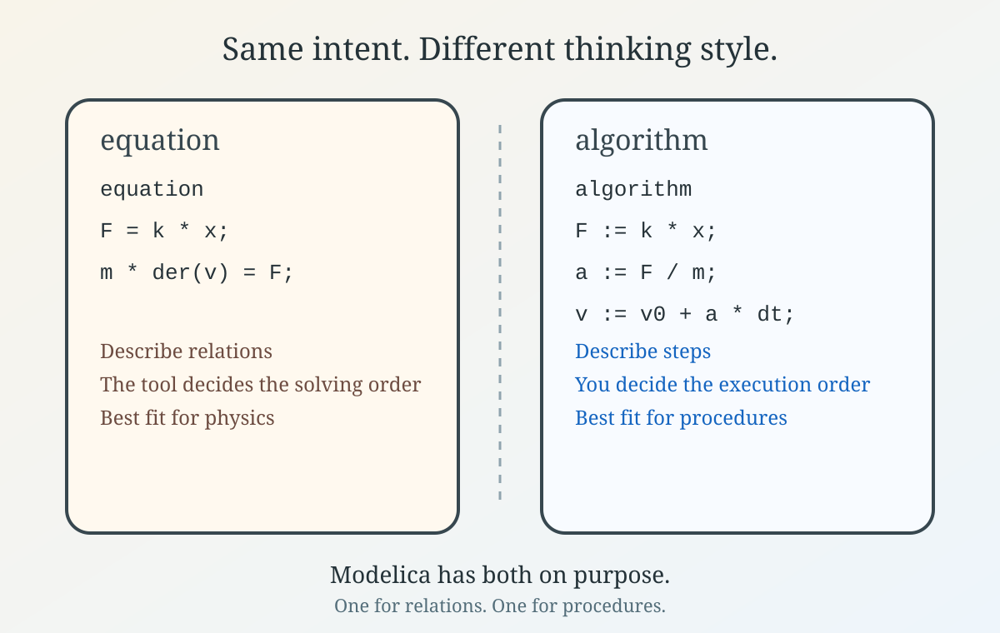

Algorithm in Modelica: when equations are not enough

I hope you’ve got your preferred drink in hand ☕️🫖💧
Pop quiz: if Modelica is an equation-based language, why does it even have an algorithm section?
Fair question.
Back in the code article, we mostly lived in equation sections. That was not an accident. Modelica is, first and foremost, an equation-based language. So when you first encounter algorithm, it can feel a bit like finding a screwdriver in the cutlery drawer. Useful, yes. Unexpected too. 😅
And if you remember the article about acausal equations, that is exactly why this can feel a bit odd: equations describe relations, not a sequence of steps.
Today, - because I am late in writing - let’s make it brutally simple:
equationis for relations that are truealgorithmis for computations done step by step
Let’s dig into it.
The short version
In an equation section, you describe relations:
equation
F = k * x;
m * der(v) = F;
v = der(x);You are not telling the tool what to compute first. You are declaring the physics, and the compiler figures out the rest. This is the usual Modelica mindset.
An algorithm section is different. There, you write assignments executed in order:
algorithm
a := 1;
b := a + 2;
b := b * 3;Here the order matters. First a, then b, and then b again (based on b). No acausal magic. Just a sequence.
So the rule of thumb is:
- if you are expressing physics, prefer
equation - if you are describing a procedure,
algorithmmay be the better fit
That is the whole idea, really. The rest is just learning when one mental model helps more than the other.
A tiny example
A place where algorithm really earns its keep is when you know how to numerically solve a problem. Say you want the square root of a number using Newton’s method — improving a guess again and again until it is good enough:
function mySqrt
input Real a "Number we want the square root of";
output Real x "Approximation of sqrt(a)";
algorithm
x := a; // initial guess
for i in 1:100 loop
x := 0.5 * (x + a / x); // Newton update
if abs(x*x - a) < 1e-12 then
break; // close enough, stop early
end if;
end for;
end mySqrt;This is exactly the kind of thing algorithms are good at:
- start from a guess
- repeat an update step
- stop as soon as you are close enough
- return the final answer
And notice the important part: the order and the repetition are the whole point. “Keep improving x until x*x is close to a” is a recipe, not a relation. You cannot write “iterate until converged” as an equation — there is no single relation that is always true. That is why algorithm fits here and equation does not. 💡

Could you sometimes let the tool solve x*x = a as an equation instead? Absolutely — and for a plain square root, you should! But the moment you need a specific numerical procedure (a particular iteration, a convergence criterion, a custom trick), the step-by-step version is the one that makes sense.
Have a look at some Modelica functions in the MSL, some of them have great solving tricks to avoid numerical issues.
Should I use algorithm everywhere now?
No 😄
If your model is a physical system, equations should still be your default language. They preserve the declarative style of Modelica and give tools the best chance to manipulate and solve the model efficiently.
Use algorithm when:
- you are writing a function
- you need a loop for bookkeeping or aggregation
- you need a sequence of assignments that is naturally procedural
And avoid using algorithm just because it looks more familiar if you come from Python, C, or MATLAB. Modelica can do procedural things, yes. But its real beauty is still in the equations.
In other words: algorithm is part of the language. It is not the center of the language. Important nuance. 😉
The END for today
Enough for today. If algorithm looked suspiciously imperative to you, that is because it is. And that is perfectly fine, as long as you use it for the right jobs.
Another time, we might compare a few mini-examples that are elegant in equation and awkward in algorithm and vice versa. That would make the boundary even clearer. 🔧
Break is over, go back to what you were doing.
Clem
Next ->
© 2025-2026 Clément Coïc — Licensed under creative commons 4.0. Non-commercial use only.